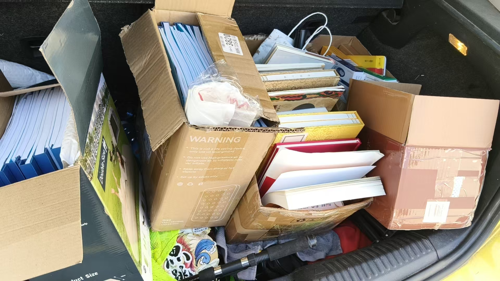
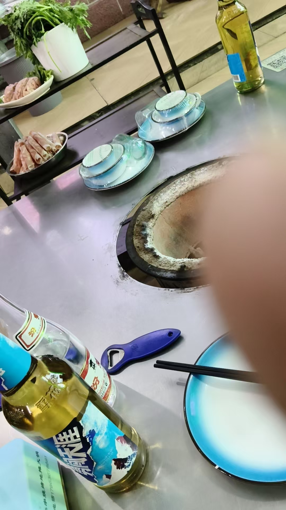

20261014脑屏里出现画面 供桌上有丰盛的水果 这是让我回家供奉
民间文化 原始对话记录
回家，拉回来了一车书
今天回家，脑屏里出现画面
供桌上有丰盛的水果
家里一团和气，喜气洋洋
脑屏已经起主导作用
这是让我回家供奉
祖师们就会赐福
当然得照做
下午，带着父母去提工资

返回潍坊来
以下为编者整理的主题文章
编者整理 · 主题文章
供桌上那盘水果
导读：回家，拉回来一车书。脑屏里出现一个画面：供桌上有丰盛的水果，家里一团和气，喜气洋洋。他说，脑屏已经起主导作用了——这是让他回家供奉。
回家，拉回来了一车书。
今天回家，脑屏里出现画面。"供桌上有丰盛的水果，家里一团和气，喜气洋洋。"
他给这个画面下了一个判断："脑屏已经起主导作用。" 这是让我回家供奉，祖师们就会赐福。当然得照做。
在这套体系里，脑屏不是一个形容词。闭眼在脑中成像，用它把事情先过一遍，再决定做不做——这是它的日常用法。出门买菜，馒头、花卷、油饼三样摆在跟前，花卷是白亮的，那就买花卷，"哪个亮买哪个"。要不要出去，也问一句，看宅子亮不亮、外面那条街亮不亮。任何事都要选择一下，记得是用脑屏。
平时它给的是选择题。这一次给的是一句吩咐。
画面的内容也很具体：供桌，水果，一家人。不是别人家的供桌，是自己家的。要办的事就摆在眼前——回去，把供桌摆起来。祖师赐福这句话，在他的说法里不是许诺，是顺序：先供奉，后赐福。
关于供奉这件事，他讲过的规矩散在别处。初一、十五要上香；佛菩萨的圣诞要记着；商品房里的佛堂怎么安置；供品怎么摆、香怎么上。这些零碎的讲究，凑起来就是一张清单。这回脑屏递过来的，是清单上的一行。
下午，带着父母去提工资。返回潍坊来。
就这些。
说明与免责：本站为民间修炼、民俗文化与传统文化资料的整理与记录，内容源自传承者口传与个人修习体会，仅供文化交流与研究参考，不构成医疗、健康、投资或任何功效承诺。所述内容属传统术数范畴，请理性看待；如身体不适，请及时就医。请遵守法律法规与公序良俗。